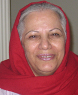

در آستانه سالروز تجمع اعتراضی زنان در 22 خرداددو تن از اعضای کمپین یک میلیون امضا بازداشت شدند..
ساعت یک بعد از ظهر روز 20 خرداد ماه 1386 زنگ خانه زینب (احترام) شادفر عضو مرکز فرهنگی زنان و از فعالان کمپین یک میلیون امضا به صدا در آمد. یکی از همسایه های او بود که در جمع آوری امضا نیز فعال بود. او از پشت آیفون گفت که نمی تواند پایین بیاید و از احترام خواست که دم در برود. چند لحظه بعد احترام 62 ساله زنگ زد و عصا و عینک اش را خواست.
«فوری پایین رفتم. یک آقا با لباس شخصی و یک بی سیم به همراه یک خانم چادری با یک سرباز ایستاده بودند، ماشین نیروی انتظامی هم نبود. دوست مادرم را که حدود 50 سال سن دارد حین جمع آوری امضا بازداشت کرده و بعد سراغ مادرم آمده بودند. برگه هایی دستشان بود اما اصلا به ما نشان ندادند. گفتم حکم را می خواهم ببینم نشان ندادند. گفتند به دستور دادیار برای پاره ای توضیحات می روند و تا یک ساعت دیگر می آیند. نگران نباشید و نمی خواهد بیایید خودشان بر می گردند.» مریم تقوی دختر احترام شادفر می افزاید:« اما نه تنها آنها نیامدند بلکه به بازداشتگاه نیز منتقل شدند.» مریم تقوی به همراه فخری شادفر خواهر احترام و برخی دوستان و آشنایان بازداشت شده گان به کلانتری می روند و می فهمند که آنها را ابتدا به کلانتری 104، میدان نیلوفر برده اند، و در آنجا گویا قاضی 24 ساعت حکم بازداشت آنها را صادر کرده است و سپس آنان را به زندان وزرا منتقل کرده اند »
مریم تقوی می گوید :«دوباره به کلانتری برگشتیم در آنجا به ما گفتند که خبری ندارند. من دیگر عصبی شدم و گفتم آخر مادر مرا به چه جرمی گرفته اید، چه حکمی برایش صادر کرده اید. گفتم من پزشکم هر کارتی یا سندی لازم باشد می توانم بدهم تا فردا هرجا خواستید بیاورمش اما آزادش کنید چون بیمار است اما توجهی نکردند. ما را مجددا به دادسرای خیابان خارک ناحیه 6 فرستادند در آنجا هم اظهار بی اطلاعی کردند. دوباره به کلانتری 104 برگشتیم آنجا هم گفتند که حکم صادر شده و چون نوشته شده است که باید تحت نظر باشند نمی توان حتی به آنها اجازه ملاقات داد. بنابراین قول بازگشت یک ساعته مادرم به بازداشت در بازداشتگاه وزرا منتهی شد.» تنها به خانواده ها اجازه داده ناند که داروهای آنها رابرایشان به زندان ببرند.